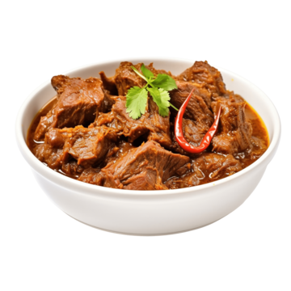

RUMAH MAKAN DONZZ
RENDANG
Rendang adalah masakan tradisional Indonesia yang berasal dari Minangkabau, Sumatera Barat. Makanan ini terkenal di Indonesia bahkan hingga mancanegara sebagai salah satu masakan terenak di dunia. Rendang terbuat dari potongan daging sapi yang dimasak dalam waktu yang cukup lama dengan campuran rempah-rempah dan santan, hingga kuahnya mengering dan bumbunya meresap ke dalam daging.
GULE
Makanan gule adalah masakan khas Indonesia yang berasal dari Jawa Tengah. Makanan ini terbuat dari daging yang dimasak dengan bumbu rempah-rempah khas Indonesia seperti bawang merah, bawang putih, jahe, lengkuas, serai, dan daun salam. Bumbu-bumbu ini kemudian dihaluskan dan dimasak bersama dengan santan, sehingga menghasilkan kuah kental yang kaya rasa.psum